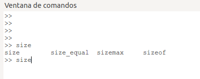

Tips Octave 1: el historial, atajos de teclado y más¶
Acceder a los comandos del historial con el cursor¶
Una vez tecleados algunos comandos en la consola los podremos recuperar pulsando la tecla de cursor hacia arriba. Pulsando sucesivamente podremos recuperar el comando buscado y, o bien ejecutarlo pulsando return, o bien editarlo y modificarlo antes de una nueva ejecución.
Esta opción es muy útil para volver a dar valor a variables matriciales y cosas así, o simplemente para agilizar la ejecución de llamadas a funciones realizadas con anterioridad.
Ayuda a teclear comandos¶
Cuando tecleamos comandos en la consola de Octave podemos utilizar la tecla del tabulador para que termine de completarse un comando parcialmente tecleado. Si solo hay una opción posible, el comando se completará. Si hay más de una opción, al teclear el tabulador por segunda vez nos mostrará las distintas opciones disponibles.
En el ejemplo que se muestra en la figura se tecleó ‘size‘ y dos veces el tabulador, obteniendo las distintas funciones disponibles que empiezan por ‘size‘:
{kind=link}
Comprobación de gráficos¶
Una vez instalado Octave conviene comprobar que funciona adecuadamente el sistema de gráficos. Octave ofrece dos funciones utilitarias para ese fin: peaks() y sombrero(). Prueba a utilizar ambas funciones. Como resultado se debe abrir una nueva ventana, la ventana de gráficos, mostrando la gráfica de la función. El resultado de la función peaks() debería ser parecido al de la figura siguiente:

Y a continuación el resultado de ejecutar la función sombrero():

La ventana de gráficos puede variar un poco de unos sistemas operativos a otros. En todos los casos se ofrece un menú con opciones para añadir una rejilla, hacer zoom (prueba a pinchar y arrastrar sobre la ventana), para exportar el grafico a un fichero y otras.
Note
Algunos sistemas dan problemas al arrancar los gráficos. Si es tu caso, coméntalo en el foro y trataremos de resolverlo.